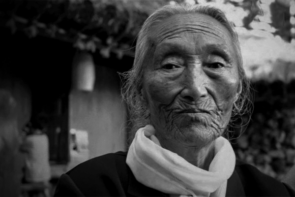

When I have seen so many soldiers at drill, I have never thought so many soldiers will come to me
When I have seen so many soldiers at drill, I have never thought so many soldiers will come to me
I haven't been able to live as a human. As the wind and wave, my time went
Ought not to forget
It's like a dream that I survived. Even dream, this is too rough nightmare
I wanted to be a nurse,
but I became a Wianbu
Father used to give dried persimmon to me when he came back home. I still like that, but sometimes I have to stop eating since it makes me homesick
Some people are continually saying that no evidence of coercion of the Japanese Military 'Comfort women' was found. In order to fight back against their claim, the victims of Japanese Military Sexual Slavery has continued participating in weekly Wednesday Demonstration since 1992. They speak out loud that "I'm the Evidence" of the brutal incident regardless of the weather.